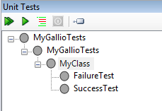
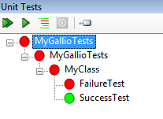
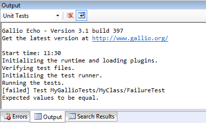
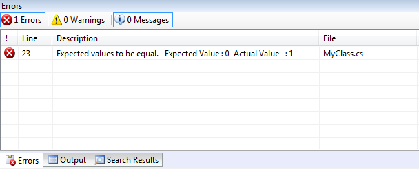

A unit test addin that adds support for MbUnit to SharpDevelop 4.0. The addin has been tested with Gallio v3.1 Update 2 build 397.
Create a new project and add a reference to MbUnit.dll and Gallio.dll. Create a new test class.
using System;
using MbUnit.Framework;
namespace MyGallioTests
{
[TestFixture]
public class MyClass
{
[Test]
public void SuccessTest()
{
int expected = 0;
int actual = 0;
Assert.AreEqual(expected, actual);
}
[Test]
public void FailureTest()
{
int expected = 0;
int actual = 1;
Assert.AreEqual(expected, actual);
}
}
}
In the Unit Tests window the MbUnit tests will be displayed.

The unit tests can be run by right clicking and selecting Run tests.
The Unit Tests window will update to show the tests that passed and failed.

The output from the Gallio test runner (Gallio.Echo.exe) will be displayed in the Output window.

Any test failures are displayed in the Errors window.

Note that running tests with the debugger or with code coverage does not work.
The addin uses the /SharpDevelop/UnitTesting/TestFrameworks extension point in the addin xml to add its own test runners.
<Path name="/SharpDevelop/UnitTesting/TestFrameworks">
<TestFramework
id="gallio"
class="Gallio.SharpDevelop.GallioTestFramework"
supportedProjects=".csproj;.vbproj"
insertbefore="nunit" />
</Path>
The extension point specifies that C# and VB.NET projects are supported. The insertbefore attribute is used to override the built-in NUnit test runner.
The GallioTestFramework class implements the ITestFramework interface as shown below.
public interface ITestFramework
{
bool IsTestMethod(IMember member);
bool IsTestClass(IClass c);
bool IsTestProject(IProject project);
ITestRunner CreateTestRunner();
ITestRunner CreateTestDebugger();
bool IsBuildNeededBeforeTestRun { get; }
}
The IsTestMethod, IsTestClass and IsTestProject methods are called by SharpDevelop to determine whether a method, class or project contains a unit test and should be added to the Unit Tests tree.
The CreateTestRunner and CreateTestDebugger methods are called when the unit tests are run.
The IsBuildNeededBeforeTestRun should return true unless you are supporting a project that does not require any compilation before the tests are run.
A test runner needs to implement the ITestRunner interface as shown below.
public interface ITestRunner : IDisposable
{
event TestFinishedEventHandler TestFinished;
event EventHandler AllTestsFinished;
event MessageReceivedEventHandler MessageReceived;
void Start(SelectedTests selectedTests);
void Stop();
}
The TestFinished event should be raised when a single test has finished.
The AllTestsFinished event should be raised when the test run is complete.
The MessageReceived event can be used to show messages in SharpDevelop's Output window.
The GallioTestRunner uses the Gallio.Echo.exe test runner to execute the unit tests. The full path to this is defined in the Gallio.SharpDevelop.addin file which will need to be changed to point to Gallio.Echo.exe on your machine.
<Path name="/SharpDevelop/UnitTesting/GallioEchoApplication">
<String
id="GallioEchoApplication"
text="D:\SharpDevelop\samples\Gallio\Gallio\bin\Gallio.Echo.exe"/>
</Path>
There is a Gallio test runner extension in the Gallio.Extension project which extends Gallio and allows Gallio to communicate the test results back to SharpDevelop.
The code in this sample is licensed under the LGPL.